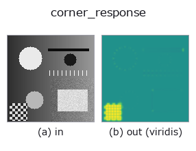

edges op• データ種: image → image
• 呼び出し: fullseye.apply(img, "corner_response", a=0.5, b=0.5) (2-D は 1 画像 + 2 スカラつまみ a,b∈[0,1] のモデル)
• HALCON 相当: points_harris(意味・パラメータは HALCON リファレンスが参考になる)

*図は合成の入力 128×128 で実際に走らせた出力。左が入力、右が出力。点群は上から見た散布(明るさ = z)、1-D 列は折れ線、体積は z 方向の最大値投影、動画は中央フレーム、複素画像は振幅、絵にならない返り値は値そのもの。*
*出力は viridis 風の疑似カラー(暗い紫 = 小、黄 = 大)。距離・位相・向き・深度のような「量の場」を読むため。*
つまみ a を振る(0.1 / 0.5 / 0.9、もう一方は既定):
▸ corner_response: knob a sweep (docs site)
*つまみ b は出力を変えない(実測: 0.1 / 0.5 / 0.9 で同一)。*
別の画像でも(合成シーン / 写真 / 硬貨。上段が入力、下段がその出力。つまみは既定):
▸ corner_response: other inputs (docs site)
*カラー (H,W,3) の入力は載せていない: この op は色チャネルを 3 本目の空間軸として扱う(色を跨ぐ)ため。チャネルごとに分けて呼ぶこと。*
Harris コーナー検出の応答値（コーナーらしさ）を画像として返す。HALCON の `points_harris`（Detect points of interest using the Harris operator.）に相当。
`a が構造テンソルを平滑化するガウシアンの σ を 0.5〜2.5 に振る。b は未使用（Harris の経験定数 k=0.04 は固定）。Sobel 勾配 Gx, Gy から構造テンソル成分 Gx², Gy², Gx*Gy をガウシアンで平滑化し、det - k*trace² を _signed01 で [0,1] に写す（0.5 が応答ゼロ、大きいほどコーナーらしく、小さいほどエッジらしい）。座標リストではなく応答マップを返す点が HALCON の points_harris（座標を返す）と異なる——極大点抽出は別途 _local_max` 等と組み合わせる必要がある。
• サンプルデータ カタログ(DL URL / ライセンス) — 2-D は skimage.data(BSD/public)+ 合成、3-D は実データ源(Stanford/PDS 等)の DL URL。
• 演算子の来歴・参考文献 — この op 族の元になった研究/手法の出典。
• アルゴリズムの正典(著者・年)と用途は上記ファミリ使い方ガイドに記載。
下のプログラムは実際に走ることを確かめてある(図と同じ入力)。Studio のヘルプではこのブロックがボタンになり、その場で読み込んで実行できる。
corner_response 0.40 0.50
▸ Load this pipeline · Load & run
• gallery2d_edges — py -3.11 examples/gallery2d_edges.py
• poc_document_scan — py -3.11 examples/poc_document_scan.py
• poc_matrix_code_reading — py -3.11 examples/poc_matrix_code_reading.py
image を入力に取れる)identity · gaussian · mean_box · bilateral · unsharp · median · min_filter · max_filter
edges)sobel_mag · prewitt_mag · roberts_mag · dog · grad_dir · log · sk_scharr · sk_farid
*Provenance: ops.py — 2D operator registry. この per-op ノートは tools/opdocs.py md が自動生成(手編集しない)。*
© 2026 Kazufumi Furuse — Fullseye operator documentation. Licensed under Apache-2.0.
{kind=link}
{kind=link}